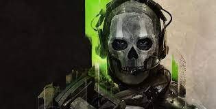
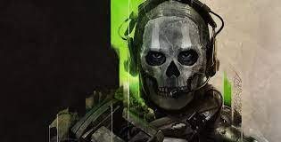

Me gustan los videojuegos por qué en ellos me puedo transportar a cualquier tipo de experiencia,
aventura, lugar, tiempo, etc.
Es entretenido enfrentarte a los desafíos que el juego te propone ya que la satisfacción de
completar un desafío difícil es gigantesca, siempre tienes nuevos retos y constantemente te vaz
sorprendiendo con las nuevas mécanicas que van apareciendo.
La característica de asumir un rol de un personaje con habilidades fántasticas y sobre todo que te
sientas identificado en algunos aspectos con tu personaje hace que te enganches más a la historia y
quieras continuar con el propósito que tiene tu personaje.
Siempre tendrás algo que hacer, hay una gran variedad de tareas ya sea ir descubriendo nuevos
lugares, estar preparandote para enfrentar a una entidad malvada, tener que salvar a alguien o algo,
tener que descubrir una historia.
Los juegos ofrecen una gran cantidad de categorías, siempre encontrarás algo que te guste, hay
juegos de acción, aventura, estrategia, simulación, terror, deportes, etc.


 
